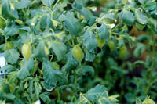
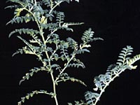

What are chickpeas?
Chickpea is a pulse crop and a member of the Leguminosae family. Pulse crops are valuable because their seeds, produced in pods, contain a higher percentage of protein than most other plants. The scientific name for this crop is Cicer arietinum L.) and was first grown in Turkey about 7,450 B.C. and India about 4,000 B.C.. Chickpea is traditionally grown in semi-arid zones of India and Middle Eastern countries.
Why produce chickpeas?
Chickpeas are produced for human consumption. They are a good source of protein and fibre and a nice alternative dish. The Kabuli type are large, white seeds (also called garbanzo beans) and used mainly in salad bars and vegetable mixes. Desi are smaller seeded and are used whole as snack foods, with the main use in split or milled products in ethnic foods. Check out the chickpea in the local grocery store; they can be bought dry or canned.
Where is chickpea produced?
Chickpeas may be grown in the brown and dark brown soil zones. Chickpea has a deep and extensive root system, giving it good drought tolerance. It is therefore, uniquely adapted to the Brown soil zone (on fallow) and the drier part of the Dark Brown soil zone (on stubble).
How much is produced?
The world production of chickpeas is approximately 4 times that of lentil. However, trade is no more than that of lentil, because India produces 90% of the world production and consumes it domestically. Major importers in the world are Spain, Algeria, Iran, Libya, Lebanon and the United States.
In 1995, only 3300 acres of Saskatchewan were seeded to chickpea. It is predicted that by the year 2000, over 75,000 acres will be seeded to chickpea in Western Canada.

What do chickpeas look like?
Chickpea plants are herbaceous annuals. The plants are usually short and may grown rather flat against the ground or upright. Taller varieties are being developed in order to make harvesting with machinery easier.
The chickpea plant is branched from the base to the upper parts of the stem, with 5 cm long leaves with 9 to 15 leaflets. Flowers vary in color, depending on the type; from white in Kabuli types, to blue and pink in Desi types. The short, inflated pods bear only one or two wrinkled, pointed seeds of various colours.
Seed size and colour varies and has led to the designation of the two primary types; Kabuli and Desi. The smaller Desi types have a longer history of production in India. Desi means "local" in Hindi. The larger cream-coloured Kabuli types are named after Kabul, the capital of Afghanistan, in reference to the belief that these larger types are native to the Mediterranean area and entered India via Afghanistan. The Kabuli chickpea is the premium-priced product due to a series of production hazards.
Within these types, there is a great variation in the size, shape and colour of the chickpea. Typically, the seed is beaked and wrinkled or ribbed. The beak is produced by the protruding radicle tip. The seed shape varies from nearly round to oblong.
How is it produced?
The chickpea is susceptible to a fungus (Ascochyta rabiei) that causes ascochyta blight. This is a seed- and stubble-borne fungus disease can destroy crops within three weeks. Frequent rainfall contributes to the effect of the disease; chickpea grows better in the drier part of the Dark Brown and the Brown Soil zones. Resistant cultivars of chickpea are available, but do not mature soon enough in the prairies.
Planting the seed:
- Desi chickpea has a coloured seed coat which is fairly thick and protects the seed against seed rot. Desi chickpea are seeded early (as soon as soil temperature, at seeding depth, exceeds 5°C).
- Kabuli chickpea has a delicate, white seed coat and is extremely susceptible to seed rots, requiring seed treatment for normal germination.
- Special care has to be taken by producers wishing to seed chickpea. The Kabuli chickpea seed is so large that it will not feed through the seed cup of many seeders without being damaged.
- The delicate seed of the Kabuli chickpea may be damaged if seeded with an air seeder if the air flow is too high or the seed is too dry.
- Chickpea is a highly efficient nitrogen-fixing crop and produces large nodules but the seed must be inoculated with a special chickpea strain of Rhizobium.
- Chickpea need only be seeded firmly into moist soil and the seed row firmed with a packer wheel.
- Chickpeas are late maturing and have a deep tap root system and a strongly indeterminate growth habit. Thus, low areas in the field with deep fertile soil and additional soil moisture should not be seeded to chickpea as the crop will probably not mature in these areas.
Harvesting the seed:
- Chickpeas do not shatter, but if harvest is delayed too long, the slender seed stalks may become brittle and break off.
- The chickpea is combined direct at full maturity. (Plant height may vary from 6 to 16 inches (15 to 40 cm))
- The kabuli chickpea seed is fragile and must be threshed and augured carefully so as to minimize mechanical damage. The drier the seed, the more susceptible it is to mechanical damage.
- Kabuli chickpeas should be fully mature at harvest and low, late maturing areas should be harvested and stored separately.
|